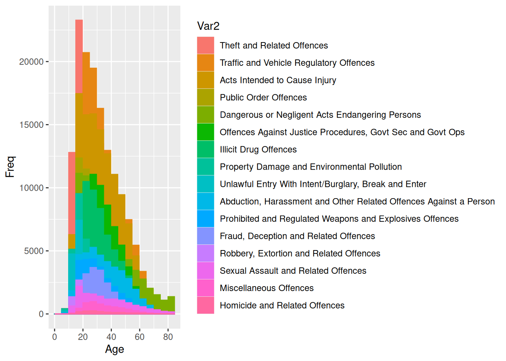
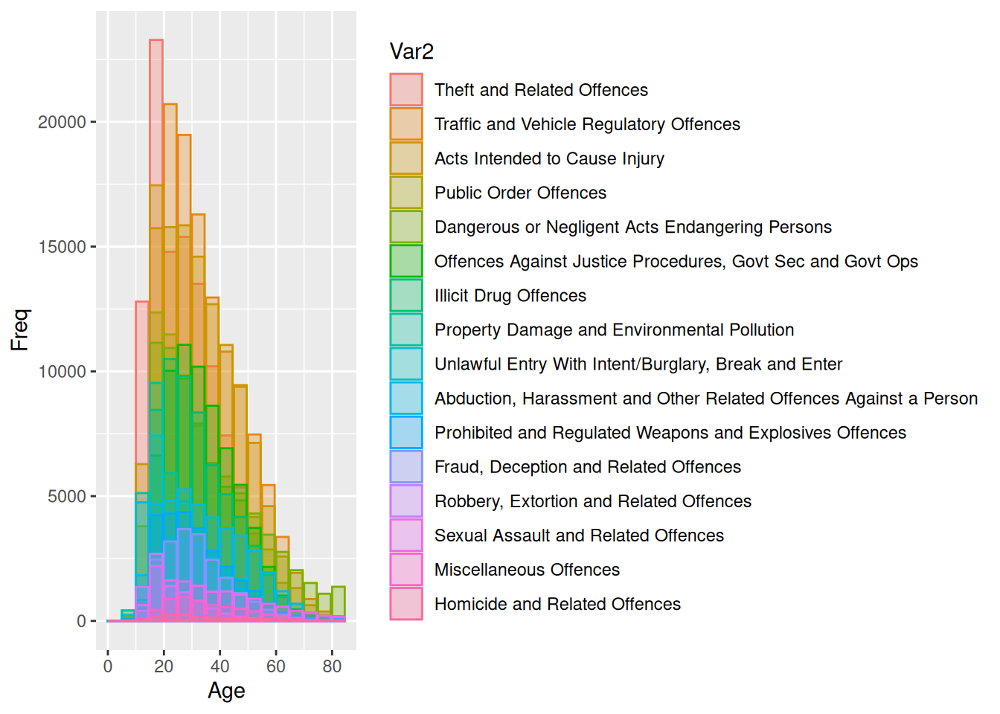
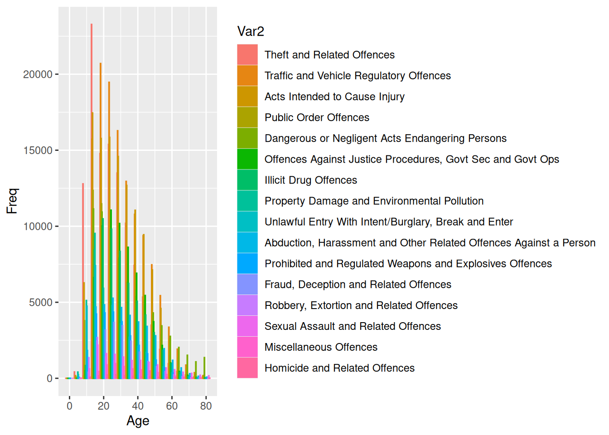
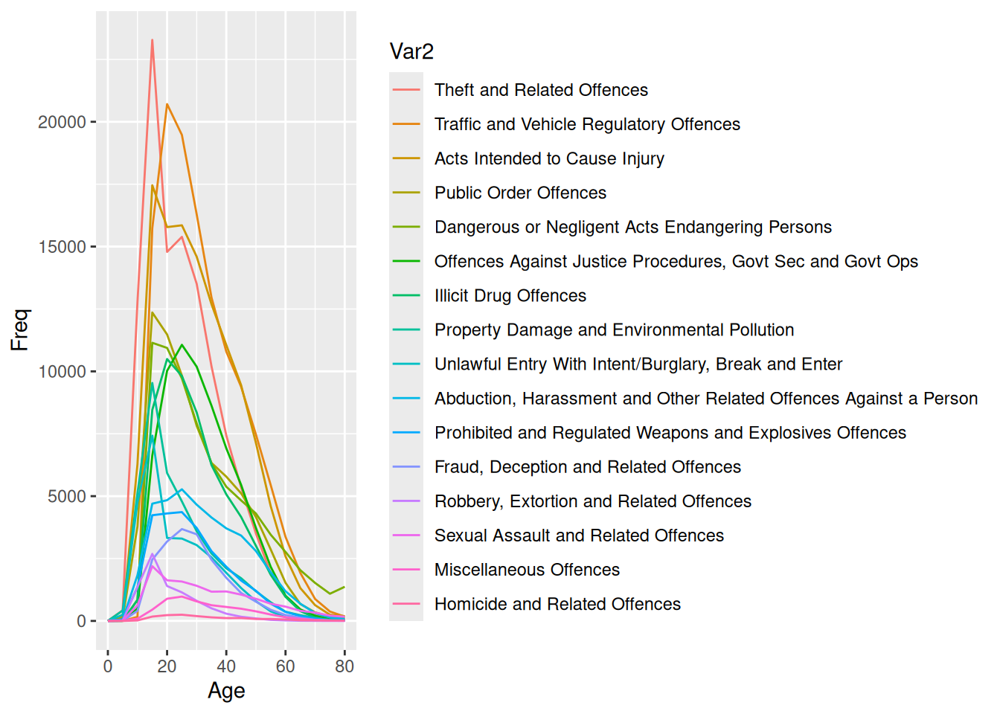
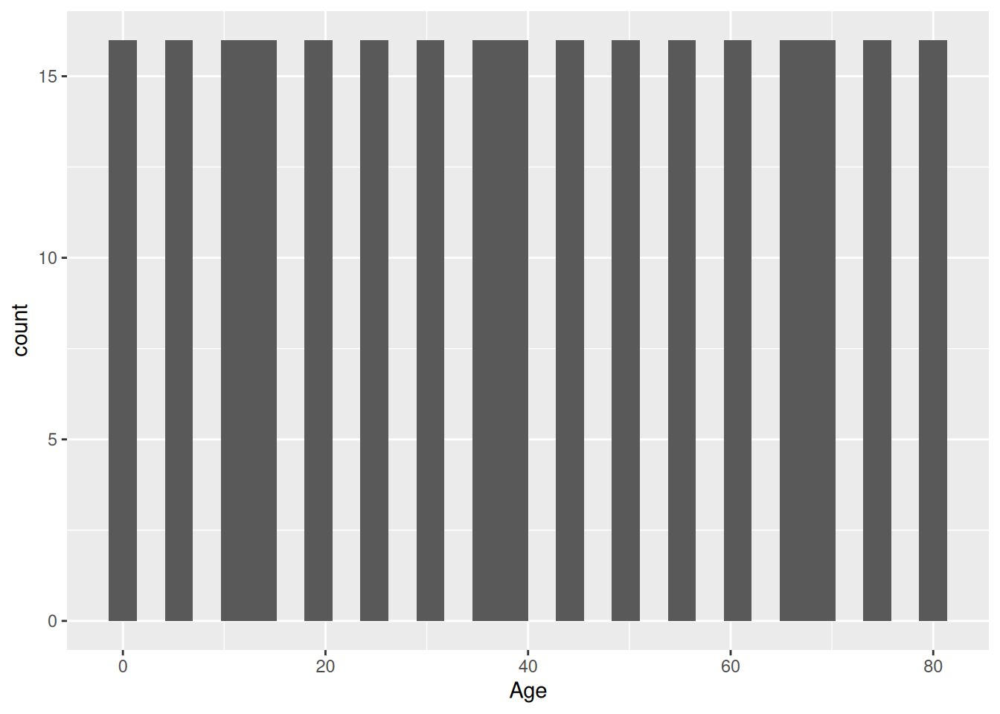
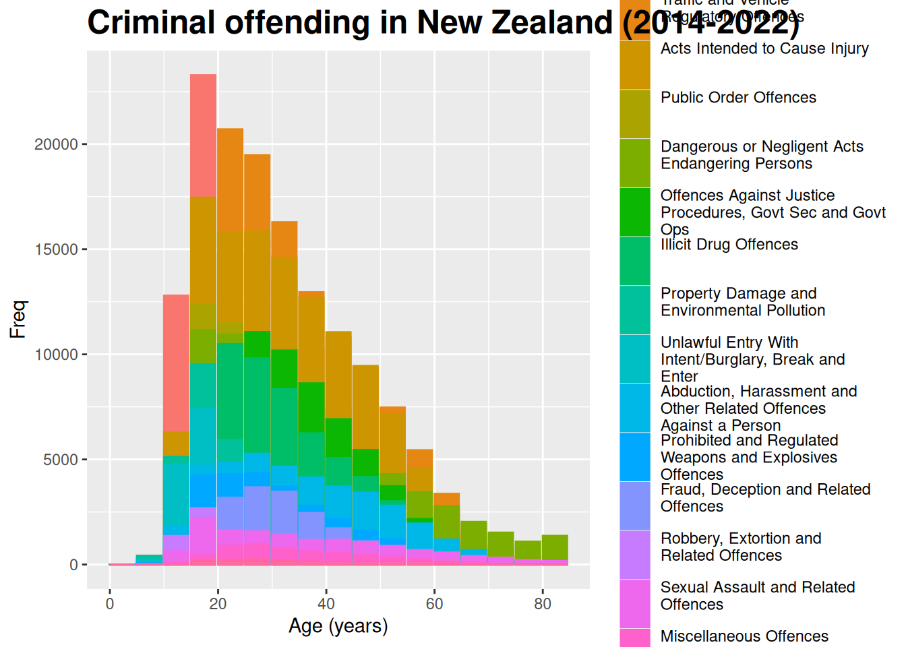
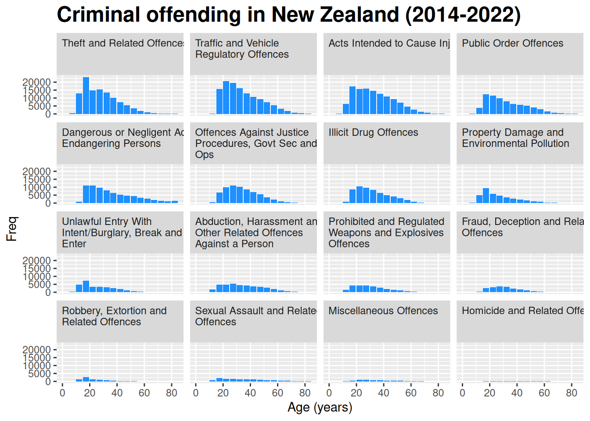
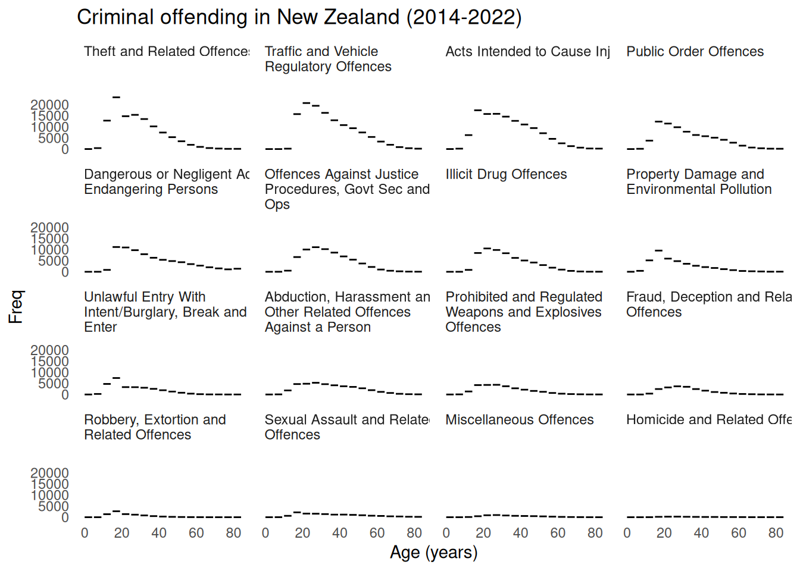
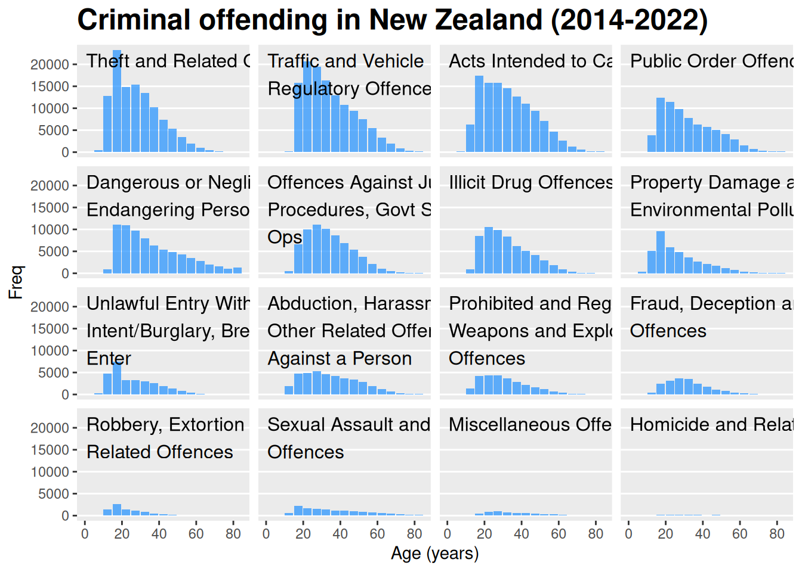
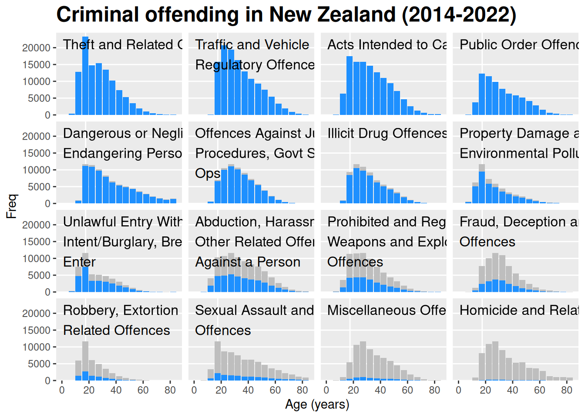

library(tidyverse)Lab3 - Effective Data Visualisations
Loading packages.
The data and questions of interest
Data shows rows of incidents handled by the Police.
We wish to answer questions about youth offending (up to age 19) regarding incidence rate overall as well as ratio between male and female offenders over time. We also want to investigate whether our conclusions change if we stratify by crime type.
crime <- read.csv("nzpolice-proceedings.csv")
head(crime) Age.Lower Police.District
1 15 Tasman
2 20 Auckland City
3 40 Auckland City
4 10 Auckland City
5 15 Auckland City
6 15 Auckland City
ANZSOC.Division SEX
1 Acts Intended to Cause Injury Female
2 Abduction, Harassment and Other Related Offences Against a Person Female
3 Abduction, Harassment and Other Related Offences Against a Person Female
4 Acts Intended to Cause Injury Female
5 Acts Intended to Cause Injury Female
6 Acts Intended to Cause Injury Female
Date
1 2015-12-01
2 2015-12-01
3 2015-12-01
4 2015-12-01
5 2015-12-01
6 2015-12-01Create re-ordered and 3-line-wrapped factor and mutate the ANZSOC.Division variable in data.
types <- apply(table(crime$ANZSOC.Division, crime$Age.Lower), 1, max)
newlevels <- names(types)[order(types, decreasing=TRUE)]
newlabels <- unlist(lapply(strwrap(newlevels, width=30, simplify=FALSE),
function(x) {
if (length(x) < 3)
x <- c(x, rep(" ", 3 - length(x)))
paste(x, collapse="\n")
}))
crime$ANZSOC.Division <- factor(crime$ANZSOC.Division, levels=newlevels)Create data with number of incidents of each crime type in each age group.
crimeAgeType <- as.data.frame(table(crime$Age.Lower, crime$ANZSOC.Division))
crimeAgeType$Age <- as.numeric(as.character(crimeAgeType$Var1))Questions of interest
We want to investigate the distribution of incidents of each crime type across age groups.
We want to investigate what types of crime are most common and how distributions of age groups compare between crime types.
Data visualisations and questions
Question 1
ggplot(crimeAgeType) +
geom_col(aes(Age, Freq, color=Var2, fill=Var2), position="identity",
just=0)
Answering all our questions of interest from this plot is quite difficult.
Commenting on what types of crime are the most common, it’s hard to give a general answer due to the breakdown on age groups. Trying to comment on the most common types of crimes within each age group is, however, also difficult. It’s hard to distinguish the categories apart based on the colors. If we were able to distinguish the categories, the use of position = "identity" means the bars are placed “in front” of each other, meaning we could see the most frequent crime type by identifying the color of the tallest bar. This way of displaying the data, however, gives many problems.
Trying to investigate the distribution of crime types across age groups, the same problems as described above apply. Colors and positions of bars makes it very difficult to see what is going on from the plot. However, we can sort of make out a distribution for each crime type by seeing “sub-histograms” in each color. All distributions look to be unimodal with peaks that differ a bit between age groups from 15-19 to 25-29.
- Overplotting is an issue in this plot, as the bars in the plot is overlapping. One might think initially that this plot is showing stacked bars, but actually the bars are “blocking” each other. Fx. by inspecting data, we know that there are observations of type “Theft and Related Offences” in age groups 20-24, but this is not at all shown, as the “previous” crime type by order of our factor variable is taller and thus hiding it completely. This makes it impossible to answer any questions regarding the distribution of crime types, as the plot has substantive issues with representing the data.
- Colour use is horrible to say the least. In the reading by Wilke, he writes: “As a rule of thumb, qualitative color scales work best when there are three to five different categories that need to be colored. Once we reach eight to ten different categories or more, the task of matching colors to categories becomes too burdensome to be useful, even if the colors remain sufficiently different to be distinguishable in principle.”. Here, we are coloring a variable with 16 levels, overstepping the guideline by Wilke massively. At the same time, the color scale does not effectively enable us to distinguish the categories. Practically, this makes the plot almost entirely unusable as a tool in answering the questions of interest.
- Text labels on the histogram are okay. “Freq” or “Count” are standard for histograms, and one could add “Age (years)” to the x-axis title to have the unit. However, an argument could be made that this is not necessary as it is clear from the context that age is measured in years. On the other hand, the legend title and labels need some work. The legend title of “Var2” is non-informative, and it actually inhibits us from answering questions of interest. The reader might be able to deduce it has something to do with crime type from the values of the variable, but the reader will not be certain what they are seeing. The legend labels could be formatted nicer with line breaks. Unless figure width is scaled up, it makes the figure harder to see and thus harder to interpret.
- The principal of proportional ink is not satisfied in this plot. The height of each bar does not encode the frequency of that crime but rather the difference from the “previous” crime type. As noted earlier, in some cases, data is even “hidden” behind other bars.
Question 2
To introduce semitransparency, I specify the alpha argument in geom_col.
ggplot(crimeAgeType) +
geom_col(aes(Age, Freq, color=Var2, fill=Var2), position="identity",
just=0, alpha = .3)
This has not helped the visualisation at all. The plot is even more confusing, as the colors are harder to distinguish from each other. The point of this plot would be to make the bars “hiding” behind others visible, but in this case the bar is a mix of all the colors and not identifiable anyway.
To introduce “jitter” in the data, I use position = "dodge" which uses position_dodge to make horizontal adjustment of bars within groups. Using position = "jitter" in this case creates chaos.
ggplot(crimeAgeType) +
geom_col(aes(Age, Freq, color=Var2, fill=Var2), position="dodge")
This plot helps us identify a bar for each crime type rather than having some hidden behind each other. This does improve the plot’s ability to help us answer our questions of interest regarding the distribution of crime types across age groups. However, the plot still suffers from problems with colors, and the bars in this plot are so thin that it makes it really hard to see them.
To create a plot with another geom, we create a line plot. Changing only one “parameter” at a time, we would keep position = "idenity" in an area plot, which leads to exactly the same issue as with the bars where some of the area of some categories would hide behind other categories (though it would be a bit more clear that is what is happening with area than bars).
We create the line plot by simply changing the geom to geom_line and making sure to remove fill as an aesthetic as that is not used for line plots.
ggplot(crimeAgeType) +
geom_line(aes(Age, Freq, color=Var2))
The line plot does help answer the questions of interest. As noted above where we used position = "dodge", categories are no longer hidden behind other. Furthermore, due to the amount of bars in the previous plot which made it difficult to see, I would judge this plot to be the best at answering both questions of interest in regards to the most common crime type as well as distribution of crime type across age groups. Though it’s definitely still not good…
Question 3
First, I make sure to create ANZSOC.Division as a factor using the newlabels defined in the assignment, which makes sure to create line breaks every 30 characters and makes all crime types take up 3 lines of text, so they are all top-aligned. With this new variable in data, I re-create crimeAgeType.
In my plotting code, I simply label the aesthetics that are used for the legend using the labs function to label both color and fill as “Crime type”. I also add the unit “years” to my x-axis title as well as added a title, which I made bold and with bigger size using the argument plot.title in the theme function.
crime$ANZSOC.Division <- factor(
crime$ANZSOC.Division,
levels=newlevels,
labels = newlabels
)
crimeAgeType <- as.data.frame(table(crime$Age.Lower, crime$ANZSOC.Division))
crimeAgeType$Age <- as.numeric(as.character(crimeAgeType$Var1))
crimeAgeType$Crime <- crimeAgeType$Var2
ggplot(crimeAgeType) +
geom_histogram(aes(x = Age))`stat_bin()` using `bins = 30`. Pick better value with `binwidth`.
ggplot(crimeAgeType) +
geom_col(aes(Age, Freq, color=Crime, fill=Crime), position="identity",
just=0) +
theme(plot.title = element_text(face = "bold", size = 18)) +
labs(x = "Age (years)", title = "Criminal offending in New Zealand (2014-2022)",
color = "Crime type", fill = "Crime type")
The plot now has a title, which according to Wilke should be at the top of the plot when creating a standalone figure, or as the first thing in the caption of a figure. The x-axis provides a unit to remove all doubt. The legend is now much more clear, as we provide information about what the grouping variable is in the title, and the line breaks in the keys make then easier to read and give more room to the figure.
This modification does help understand what data is being displayed better, meaning it would be easier to try and interpret it and answer questions of interest. However, only marginally as the plot still has substantive problems in answering questions of interest due to the issues mentioned in question 1.
Question 4
In the plot we use facet_wrap to create a plot with small multiples with facets for each crime type. In addition to this, we remove the coloring on crime type, as it is redundant now that we have facets for each crime type. This is in accordance with Wilkes guidelines in section 19.1 where he notes that:
“A second common problem is coloring for the sake of coloring, without having a clear purpose for the colors.”
ggplot(crimeAgeType) +
geom_col(aes(Age, Freq), just=0, fill = "dodgerblue") +
facet_wrap(~ Crime) +
theme(plot.title = element_text(face = "bold", size = 18)) +
labs(x = "Age (years)", title = "Criminal offending in New Zealand (2014-2022)") +
theme(strip.text = element_text(hjust = 0))
Answering the question about most common type of crime is actually not that easy to do from this plot. The plot is still better than the previous plots, and we have made sure to satisfy the principle of proportional ink by making sure that bars start from 0 and that we have the same scale for all the facets. However, it can still be difficult to fx. whether the overall frequency of “Theft…” or “Traffic…” is highest.
Commenting on individual distributions of crime types is much easier. We clearly see unimodal distributions for all crime types that are quite heavily right-skewed. The mode is not the exact same for all, as it ranges from being at 15-19 years to either 25-29 or 30-34 for some distributions (though it’s hard to see exactly what is the peak).
Question 5
In order to maximise the data-ink ratio, we should remove any ink that does not show or explain data. Thus, we
- Remove the grey background of the facet title strips using
strip.backgroundinggplot2::theme. - Remove all background from the plot using a combination of
ggplot2::theme_minimaland thepanel.gridargument inggplot2::theme. - Change the histogram to use a
ggplot2::geom_segment, which only draws the top of the bars. This is the biggest ink saver, and it allows us to visually see the data value from the placement of the bar without needing the area of a bar to judge data values.
ggplot(crimeAgeType) +
geom_segment(aes(x = Age, y = Freq, xend = Age + 4)) +
facet_wrap(~ Crime) +
theme(plot.title = element_text(face = "bold", size = 18)) +
labs(x = "Age (years)", title = "Criminal offending in New Zealand (2014-2022)") +
theme_minimal() +
theme(strip.text = element_text(hjust = 0),
strip.background = element_blank(),
panel.grid = element_blank())
Comparing this plot to the one in question 4, I am not completely on team Tufte. I prefer the previous visualisation though more ink has been used in that plot. I think the area of the bars help give a better overview of the data. That said, I do like the removal of facet strip background and grid lines that are not needed.
So in my opinion this does not help answer questions of interest, but I do recognise we have the same ability to answer them using this plot, given enough time to adjust our glasses.
Question 6
- We create the labels “on the plot” rather than have them in strips from
ggplot2::facet_wrapby- removing the strips entirely with by setting
strip.backgroundandstrip.textinggplot2::themetoelement_blank(). - adding labels with
gggrid::grid_panel. We get access to the labels by mapping them as an aesthetic, so it’s available in the data inside our function that creates thetextGrob.
- removing the strips entirely with by setting
- I tried doing the grid lines by just setting
panel.grid.major.xtoelement_blank(), but that did not work, so I removed all grid withpanel.gridtoelement_blank()and then addingpanel.grid.major.yas white lines.
ggplot(crimeAgeType, aes(Age, Freq, group = Crime)) +
geom_col(just=0, fill = "dodgerblue", alpha = .7) +
facet_wrap(~ Crime) +
gggrid::grid_panel(
function(data, coords) {
grid::textGrob(
label = data$label,
x = grid::unit(2, "mm"),
y = grid::unit(1, "npc") - grid::unit(2, "mm"),
just = c("left", "top")
)
},
aes(label = Crime)
) +
theme(plot.title = element_text(face = "bold", size = 18)) +
labs(x = "Age (years)", title = "Criminal offending in New Zealand (2014-2022)") +
theme(strip.background = element_blank(),
strip.text = element_blank(),
panel.grid = element_blank(),
panel.grid.major.y = element_line("white"))
The plot is basically the same as in question 4, so I have the same comments comparing it to previous plots. This plot does have an addition of only y-grid lines, which I think help read the data more accurately. A way to keep the grid lines but increase the data-ink ratio would be to have a white background and light grey grid lines rather than the other way around.
Challenge 7
Remove the void between x-axis and data by setting expand = ggplot2::expansion(mult = c(0, 0.05)) in scale_y_continuous.
We use grid_panel to draw text and grey bars inside each panel.
ggplot(crimeAgeType, aes(Age, Freq, group = Crime)) +
facet_wrap(~ Crime) +
gggrid::grid_panel(
function(data, coords) {
bar_width <- unique(diff(coords$x)) * 0.9
ind_age1519 <- which(data$x == 15)
line_placement <- coords$x[ind_age1519] + bar_width / 2
scale_bars <- 0.5 / max(coords$y)
vline <- grid::segmentsGrob(
x0 = line_placement, x1 = line_placement,
y0 = 0, y1 = 1,
gp = grid::gpar(col = "white")
)
bars <- grid::rectGrob(
x = coords$x, y = 0,
width = bar_width, height = grid::unit(coords$y * scale_bars, "npc"),
just = c(0, 0),
gp = grid::gpar(
fill = "grey",
col = "grey"
))
grid::grobTree(vline, bars)
}
) +
geom_col(just=0, fill = "dodgerblue") +
gggrid::grid_panel(
function(data, coords) {
grid::textGrob(
label = data$label,
x = grid::unit(2, "mm"),
y = grid::unit(1, "npc") - grid::unit(2, "mm"),
just = c("left", "top")
)
},
aes(label = Crime)
) +
theme(plot.title = element_text(face = "bold", size = 18)) +
labs(x = "Age (years)", title = "Criminal offending in New Zealand (2014-2022)") +
theme(strip.background = element_blank(),
strip.text = element_blank(),
panel.grid = element_blank(),
panel.grid.major.y = element_line("white")) +
scale_y_continuous(expand = ggplot2::expansion(mult = c(0, 0.05)))Also solution scaling the data and creating a seperate geom_col:
max_freq <- max(crimeAgeType$Freq)
max_freq_group <- crimeAgeType %>%
summarise(max_grp_freq = max(Freq),
grp_ratio = max_freq / max_grp_freq / 2,
.by = Crime)
crimeAgeType_freqadj <- dplyr::left_join(crimeAgeType, max_freq_group, by = "Crime") %>%
dplyr::mutate(Freq_adj = Freq * grp_ratio)
crimeAgeType_freqadj %>%
ggplot(aes(Age, Freq, group = Crime)) +
geom_vline(xintercept = 17.5, colour = "white") +
geom_col(aes(y = Freq_adj), just=0, fill = "grey") +
geom_col(just=0, fill = "dodgerblue") +
facet_wrap(~ Crime) +
gggrid::grid_panel(
function(data, coords) {
grid::textGrob(
label = data$label,
x = grid::unit(2, "mm"),
y = grid::unit(1, "npc") - grid::unit(2, "mm"),
just = c("left", "top")
)
},
aes(label = Crime)
) +
theme(plot.title = element_text(face = "bold", size = 18)) +
labs(x = "Age (years)", title = "Criminal offending in New Zealand (2014-2022)") +
theme(strip.background = element_blank(),
strip.text = element_blank(),
panel.grid = element_blank(),
panel.grid.major.y = element_line("white")) +
scale_y_continuous(expand = ggplot2::expansion(mult = c(0, 0.05)))
Here we show grey bars that are scaled, so the highest bar is half the height of the panel to enable inspecting the crime types with less frequency without disrespecting the principle of proportionate ink. Thus, it makes it easier for us to see that the distributions are
Overall summary
The first plot we create have issues with all aspects that Wilkes mentions. We have problems with
- Overplotting: The bars are overlapping, hiding some of the data
- Colour use: 16 categories are colored. According to Tufte, you should rarely color more than 5 categories, even with “good”, distinct color schemes.
- Text labels: Missing title, need more details in axis and legend titles. Also no thought in formatting of the legend keys.
- The principle of proportional ink: This principle is not satisfied as the size of each bar does not encode the frequency but rather the difference from previous crime type.
In Q2, we try and solve the issues with overplotting using semitransparent bars, jittering and changing the geom. This does help somewhat, but the plot still has issues with all other points above.
In Q3 we improve the labels, helping guide the reader in understanding what the plot is displaying, though the plot still has a lot of issues.
In Q4 we introduce small multiples to group crime types into facets rather than having them within the same plot but grouped by color. This is the biggest difference in the plots, as it makes us able to actually see the distribution of age across crime types, and we can see that all distributions seem to be unimodal.
In Q5 we try to maximise the data-ink ratio by removing all grid lines, facet strip backgrounds and displaying only the horizontal line representing the top of the bar from the histograms. I do like the minimalistic view from removing grid lines and facet strip background, but I do think the removal of bars makes reading the data values and getting an understanding of the data less efficient.
In Q6 we create a plot similar to Q4 but with grid lines only specifically for the y-axis and with labels drawn onto the plot itself rather than in facet strips. I like this modification, though I would have preferred a white background with grey grid lines.
In challenge 7 we show grey bars that are scaled, so the highest bar is half the height of the panel to enable inspecting the crime types with less frequency without disrespecting the principle of proportionate ink.